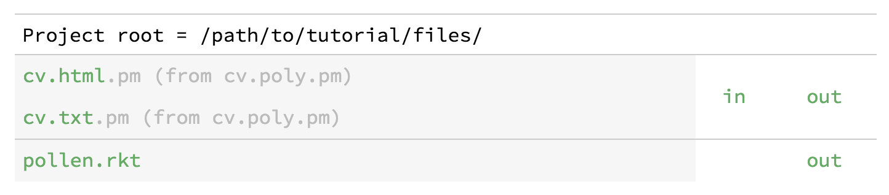
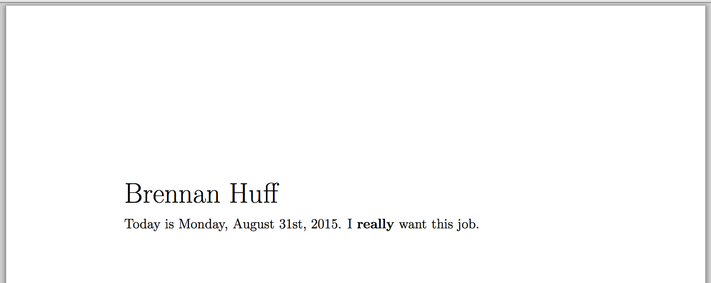

8 第四个教程：多个输出目标
在以前的教程项目中，我们在源文件和输出文件之间保持着一对一的关系。但在本教程中，你将学习如何从一个 Pollen 源文件中生成多种格式的输出。你将了解到：
设置和使用 poly 源文件
setup 子模块
分支标签函数
使用 Pollen 生成二进制数据
如果您想以最短的时间了解 Pollen ，请尝试Quick tour。
8.1 Prerequisites
我假设你已经完成了 third tutorial ，并且理解了 Pollen 标记模式的原理——创建源文件，将其转换为 X-表达式，然后将其与模板结合，制成输出文件。
我也会假设你对(part "Attaching_behavior_to_tags") 的标签函数很熟悉，并且你能读写基本的 Racket 函数。本教程的大部分内容都是编程——简单的编程，但仍然是编程。
8.2 Optional reading: Multiple-output publishing and its discontents
以多种输出格式发布文件是一种常见的需求。一个常见的解决方案是用一种输出格式编写或渲染你的文件，然后根据需要转换为其他格式。而且，对于简单的文件，这可以很好地工作。
但一般来说，直接将你的文档写成输出格式，如 Markdown 或 HTML ，是个坏主意。为什么呢？因为输出格式就是这样——输出格式。它们被优化来存储输出设备需要的那种信息，而不是作者可能想要的信息。因此，将它们用作输入格式意味着失去了大量的表达能力。我在 The case against Markdown 中讨论了这个问题。Markdown（太）经常被当作一种创作格式来评价，但它不是富有表现力或语义的。它只是一种记述 HTML 的方式，而 HTML 只是一种无聊而有限的输出格式。
将一个文件从一种输入格式转换到另一种格式是比较好的——至少你可以得到使用一个更有表现力的输入格式的好处。问题是，当你在不同格式之间转换时，丰富性不一定会贯穿始终，这涉及到对某些实体如何相互映射的简化假设。同样，这不是对 Pandoc 这样的文档转换器的责难——如果你的文档足够简单，而且你对转换过程中的假设感到满意，那就太好了。
但如果你不这样做，你就被困住了。
8.2.1 And let’s not leave out programmability
(part "这本书是一个程序")，对吗？即使你喜欢你的输入格式，它也可能是不可编程的。例如，我把目光投向 Pandoc 支持的输入格式 ，我没有看到任何一种格式是可以在通用语言中原生编程的。所以，请选择您最喜欢的吧。如果你喜欢编程所能提供的表现力和效率，那么你还是会被卡住。
8.2.2 One source, multiple outputs
相反，如果我们从一个可编程的源文件中呈现出多种文件输出格式，会怎么样？
以软件开发做的类比是为多个平台编译代码的问题。在这种情况下，你永远不会为一个平台编译代码并尝试“转换”它以在另一个平台上使用。你会尽一切可能避免为每个平台维护单独的源代码。相反，理想的解决方案是拥有一个可以编译到每个平台的共同源代码。
在我们进一步讨论之前，让我们坦率地说：虽然这一直是理想的解决方案，但它一直是一个困难的问题。创建通用的源代码往往意味着放弃一些在特定平台上可能有的优化。其结果是，跨平台的应用程序往往没有原生平台的应用程序那样快速和流畅。（要证明这一点，请看有史以来的每一个 Java 桌面应用程序）。
然而，对于文档来说，好消息是，我们不是在创建软件代码，确切地说，我们是在创建数据文件。因此，作为一个技术问题，这个问题比较简单。
此外，文档输出格式在技术细节上可能有所不同，但它们所编码的概念之间有很多重叠之处——例如，总是有一种方法来指定字体和点数大小，指定页边距，等等。因此，原则上说，在我们的源码中，应该有可能以一种高层次的方式对这些实体进行编码，从输出层面的细节中抽象出来。
8.2.3 Scribble vs. Pollen
顺便说一下，我并不是在这里说我已经发现了相当于希格斯玻色子的文档处理方法。许多工具都提供了多输出发布功能，包括 (part ("(lib scribblings/scribble/scribble.scrbl)" "top"))，它是 Pollen 的基础。
让我明确一点：Scribble 在这方面做得很好。如果你有一个适合 Scribble 的文档模型和渲染模型的项目，那么它可能是比 Pollen 更好的选择。Scribble 可以做很多 Pollen 无法做到的事情。
那么，为什么喜欢 Pollen ？Pollen 更具有开放性。尽管 Pollen 采用了 Scribble 的语法，但它省去了 Scribble 在后端进行的大量繁重工作。从某种意义上说，这给 Pollen 用户带来了更多的工作，因为某些东西需要重新创建。但从另一种意义上说，它创造了一个机会，因为它也消除了 Scribble 需要施加的限制。从头到尾，你都有最大的控制权。复杂的事情是可能的，但简单的事情仍然简单。
8.3 Making a multiple-output project
多输出项目与单输出项目的工作方式基本相同。主要区别在于，你需要以不同的方式命名你的源文件，更新你的 "pollen.rkt" 文件以确定你想要的目标输出类型，并改变你的标签函数以处理这些类型。
8.3.1 The poly output type
在之前的教程中，你看到了 Pollen 源文件是如何通过使用双文件扩展名来对应某些输出文件类型的：第一个扩展名用于识别输出文件类型，第二个扩展名用于识别源文件类型。因此，为了最终得到一个名为 "document.html" 的输出文件并使用 Pollen 标记（由扩展名 "pm" 表示），你需要创建一个名为 "document.html.pm" 的源文件。
在一个多输出项目中，一个源文件不再与特定的输出类型一一对应。为了表示这一点，我们将使用特殊的 poly 扩展名。所以我们的 "document.html.pm" 将变成 "document.poly.pm" 。
poly 扩展名是默认的，但可以通过覆盖default-poly-source-ext（默认的多输出源文件扩展名）设置为项目进行更改。
让我们为履历表建立一个新的多输出项目。找到一个方便的目录，创建一个新的 poly 源文件，如下：
#lang pollen ◊heading{Brennan Huff} Today is ◊(get-date). I ◊emph{really} want this job.
是的，这是有史以来最糟糕的履历表。我敢肯定，你的会更好。
除了新的 poly 扩展名之外，这个文件与我们以前看到的文件没有什么不同。它以 #lang pollen 开头。它有一些文本和标签。而 pm 扩展名表明我们正在使用 Pollen 标记。
当然，你可以使用任何你喜欢的 Pollen 语言的方言作为 poly 源代码。当然，我最喜欢 Pollen 标记（Pollen markup），所以我们在这里使用它。
8.3.2 Poly sources in the project server
启动你的教程目录下的项目服务器。在你的浏览器中，你应该看到类似这样的东西。

“为什么它说 "cv.html" ？我以为我们有一个多输出的源文件。” 你会的。但由于我们还没有确定 poly 源文件的任何渲染格式，所以 Pollen 假设为 HTML。这还允许你单击以立即查看结果：
这证明了我们的源文件在工作。然而，它看起来很蠢，因为我们还没有定义任何合理的标签函数。因此，让我们在我们的项目目录中添加一个 "pollen.rkt" 文件，如下。
#lang racket/base (require racket/date txexpr) (provide (all-defined-out)) (define (get-date) (date->string (current-date))) (define (heading . elements) (txexpr 'h2 empty elements)) (define (emph . elements) (txexpr 'strong empty elements))
get-date 标签函数将插入当前日期作为一个字符串。heading 和 emph 标签函数将分别成为典型的 HTML h2 和 strong 标签。（如果不清楚为什么会这样，这将是回顾(part "Using_Racket_s_function_libraries") 和Returning an X-expression 的好时机。)
当我们刷新项目服务器中的文件时，我们会看到更合理的东西。
Today is Sunday, June 5th, 2022. I really want this job.
8.3.3 Adding output targets for poly sources
尽管 Pollen 使用 HTML 作为 poly 源的默认目标，但如果你只想得到 HTML，你就不会使用 poly 源了。所以我们的下一步将是明确定义我们想要与多边形源关联的输出目标。
我们将通过在 "pollen.rkt" 中覆盖 Pollen 的default-poly-targets 值来做到这一点。
8.3.3.1 Using the setup submodule
如果您还没有调查过它， pollen/setup 提供了 overridable values ，允许您从 "pollen.rkt" 文件中配置某些 Pollen 特征。例如，该页面上的示例显示了如何更改标记源扩展名和 Pollen 命令字符。
这个想法是，你在你的 "pollen.rkt" 文件中添加一个setup 子模块，为你想覆盖的值添加一个define 语句。因为我们要定义一个覆盖值，所以我们去掉了default- 的前缀，直接叫它poly-targets。我们的值将是一个表示目标的文件扩展名的列表。首先，让我们把输出格式设置为 HTML 和纯文本，我们将用扩展名列表'(html txt) 来表示它们。
#lang racket/base (require racket/date txexpr) (provide (all-defined-out)) (module setup racket/base (provide (all-defined-out)) (define poly-targets '(html txt))) (define (get-date) (date->string (current-date))) (define (heading . elements) (txexpr 'h2 empty elements)) (define (emph . elements) (txexpr 'strong empty elements))
尽管你通常不需要重启项目服务器来查看 "pollen.rkt" 中的变化，但对于config 值来说，你需要这样做，因为它们被藏在一个子模块中。在重启时，项目服务器将看起来像这样。

发生的事情是，项目服务器现在知道了我们在 "pollen.rkt" 中的 setup 子模块。它看到我们想将 poly 源文件与 HTML 和纯文本目标相关联，因此在项目服务器列表中向我们显示了两个条目。 "cv.html.pm" 和 "cv.txt.pm" 。正如相邻的信息所示，这些并不是磁盘上的新源文件，而是从 "cv.poly.pm" 衍生出来的。
如果你点击 "cv.html.pm" ，你会看到和以前一样的 HTML 输出。然而，如果你点击 "cv.txt.pm" ，你会看到这个。
(root (h2 Brennan Huff) |
|
Today is Sunday, June 5th, 2022 . I (strong really) want this job. |
) |
不要惊慌。我们看到的是由 "cv.poly.pm" 文件生成的 X 表达式，但格式是纯文本而不是 HTML。它看起来不对，因为我们还没有更新我们的项目来处理纯文本输出。
我对(part ("(lib scribblings/guide/guide.scrbl)" "submodules")) 的细节一笔带过，但它们是 Racket 的最佳功能之一。它们之所以有用，是因为它们是真正独立的：你可以从源文件中加载一个子模块，而不用运行文件的主体。因此，像这样的任务——设置配置值——在其他语言中需要单独的文件，在 Racket 中可以作为子模块处理。
8.3.4 Adding support for another output format
整个工作的目标是要从一个源文件中得出多个输出文件。因此，为了使我们的履历表在纯文本中看起来正确，我们不会改变源文件中的任何东西。但我们将添加一个模板并更新我们的标签函数。
8.3.4.1 Adding a template for .txt
(part ("tutorial-2" "Templates")) 现在你应该很熟悉了。像往常一样，模板的名字是 template 加上相关的文件扩展名，所以在这里是 "template.txt.p" 。添加文件的方法如下。
◊(require racket/list) ◊(apply string-append (filter string? (flatten doc)))
我们在这里做的是以一种更聪明的方式将 X-表达式转换为文本。我们使用require 来引入racket/list，所以我们可以使用flatten 函数。
要了解下一行的作用，只需从内到外阅读：“从源文件（这是一个 X 表达式）导出doc，flatten 将其展平为列表，使用 string? filter(过滤）（创建一个只有字符串的列表)和apply 对这些字符串使用 string-append 函数，得到一个大字符串。”这正是我们需要的纯文本文件。
当您返回项目服务器并单击 "cv.txt.pm" 时，您将看到结果：
Brennan Huff |
|
Today is Sunday, June 5th, 2022. I really want this job. |
到目前为止，情况良好。我们已经得到了可读的纯文本。但我们已经完全丢失了我们的格式。让我们来解决这个问题。
你有没有使用过 ◊(define-meta template ...) 来从源文件中指定一个模板？你仍然可以在一个多输出的项目中使用这个方法——只是提供一个模板列表而不是一个单一的模板。参见get-template-for.
8.3.4.2 Branching tag functions
支持一个新的输出格式的另一半是使标签函数有一些合理的含义。对于 HTML，我们使用标签函数将我们的heading 标记标签映射到 HTML 的h2 标签，将我们的emph 标签映射到strong。
但纯文本没有h2 或strong。那么这样吧：当我们渲染成纯文本时，让我们的heading 标签意味着大写字母，而我们的emph 标签将意味着添加***周围的星号。
“那么我们如何使我们的标签对 HTML 意味着一件事，而对纯文本意味着不同的事情呢？” 我们使 branching tag functions 根据多边形源的当前渲染目标做不同的事情。
事实上，这个值被存储在一个名为 parameter 的 Pollen 中，名为 current-poly-target 。我们要做的是重写我们的标签函数，使其根据这个参数的值有不同的行为。更新你的 "pollen.rkt" ，如下。
#lang racket/base (require racket/date txexpr pollen/setup) (provide (all-defined-out)) (module setup racket/base (provide (all-defined-out)) (define poly-targets '(html txt))) (define (get-date) (date->string (current-date))) (define (heading . elements) (case (current-poly-target) [(txt) (map string-upcase elements)] [else (txexpr 'h2 empty elements)])) (define (emph . elements) (case (current-poly-target) [(txt) `("**" ,@elements "**")] [else (txexpr 'strong empty elements)]))
在这里，我们看到 heading 和 emph 标签函数已经被扩展为分支行为。我选择使用case，因为它很紧凑。但你可以使用任何你想要的分支结构（cond 将是另一个明显的选择）。在这两个地方，我们都为 txt 的输出格式添加了一个分支。如同承诺的那样，对于 heading 我们将文本大写，而在 emph 我们将添加双星号。
在每个标签函数的第二种情况下，能否使用(html) 而不是else？当然可以，你应该吗？用else 来写分支条件是很好的做法，因为它可以保证总是有一个结果。如果case(或cond) 没有找到匹配的子句，它会返回void，这可能是令人惊讶或恼人的。但是做你喜欢的事吧。我不是else 的警察。
现在，当我们回到项目服务器并刷新 "cv.txt.pm" 时，我们看到了我们的 groovy 纯文本格式。
BRENNAN HUFF |
|
Today is Sunday, June 5th, 2022. I **really** want this job. |
顺便说一下，我把get-date 放在这个教程中的原因是为了说明，在一个多输出的项目中，并不是每个函数都必须要有分支。（静态变量可能也不需要，尽管它们可以。) 它产生一个字符串，可以在 HTML 或纯文本中使用。我们只需要在需要上下文特定行为的标签函数中添加分支。
8.3.5 Adding support for LaTeX output
要添加更多的输出格式，我们只需重复同样的范式：在我们的setup 子模块中添加一个新的渲染目标，更新任何分支标签函数，并为新格式添加一个模板。
让我们看看我们能多快地增加对 LaTeX 输出的支持。这里是更新后的 "pollen.rkt" 。
#lang racket/base (require racket/date txexpr pollen/setup) (provide (all-defined-out)) (module setup racket/base (provide (all-defined-out)) (define poly-targets '(html txt ltx))) (define (get-date) (date->string (current-date))) (define (heading . elements) (case (current-poly-target) [(ltx) (apply string-append `("{\\huge " ,@elements "}"))] [(txt) (map string-upcase elements)] [else (txexpr 'h2 empty elements)])) (define (emph . elements) (case (current-poly-target) [(ltx) (apply string-append `("{\\bf " ,@elements "}"))] [(txt) `("**" ,@elements "**")] [else (txexpr 'strong empty elements)]))
注意，我们在poly-targets 的列表中添加了ltx 的扩展。我们还更新了heading 和emph 以使用可比的 LaTeX 命令。
然后是 "template.ltx.p" ：
\documentclass[a4paper,12pt]{letter} \begin{document} ◊(require racket/list) ◊(apply string-append (filter string? (flatten doc))) \end{document}
在这里，我们所做的只是把我们的 "template.txt.p" （把一个 X 表达式变成一个字符串），用最简单的 LaTeX 模板来包装它。（对 LaTeX 爱好者保密：请不要写信抱怨我的简陋的 LaTeX。这是个教程。我相信你能做得更好）。
重启项目服务器以重新确认对poly-targets 的修改。当你重启时，你会看到一个 "cv.ltx.pm" 的链接。点击它，你会得到这个：
\documentclass[a4paper,12pt]{letter} |
\begin{document} |
{\huge Brennan Huff} |
|
Today is Sunday, June 5th, 2022. I {\bf really} want this job. |
|
\end{document} |
就这样了。LaTeX 实现了。
8.3.6 Adding support for PDF output
还不满意吗？还想再看一个可爱的 Pollen 魔术吗？
好吧，你赢了。我们不要停留在 LaTeX 上——让我们使用 LaTeX 的 PDF 转换器，即 pdflatex ，一路转到 PDF。（这是一个命令行程序，必须安装在你的机器上，这个技巧才能发挥作用）。我在 Mac OS 10.9.5 上做了这个例子）。
我们如何做到这一点？我们将遵循我们已经建立的模式，但有一个问题。要制作一个 PDF，我们需要先生成 LaTeX 输出。所以我们实际上不需要给我们的标签函数添加新的分支——我们只是让 PDF 在我们的 LaTeX 分支上搭便车。最大的区别是在模板中，我们不是返回一个 LaTeX 源文件，而是通过 pdflatex 发送，并获得二进制的 PDF 文件。
首先，我们更新 "pollen.rkt" ：
#lang racket/base (require racket/date txexpr pollen/setup) (provide (all-defined-out)) (module setup racket/base (provide (all-defined-out)) (define poly-targets '(html txt ltx pdf))) (define (get-date) (date->string (current-date))) (define (heading . elements) (case (current-poly-target) [(ltx pdf) (apply string-append `("{\\huge " ,@elements "}"))] [(txt) (map string-upcase elements)] [else (txexpr 'h2 empty elements)])) (define (emph . elements) (case (current-poly-target) [(ltx pdf) (apply string-append `("{\\bf " ,@elements "}"))] [(txt) `("**" ,@elements "**")] [else (txexpr 'strong empty elements)]))
你可以看到，我们只是在三个地方添加了pdf 扩展名：在poly-targets 的列表中，以及在我们标签函数的ltx 分支中。（在case 语句中，将多个值放在一个分支中意味着 "匹配这些值中的任何一个")。很简单。
模板，不是那么容易：
◊(require racket/file racket/system) ◊(define latex-source ◊string-append{ \documentclass[a4paper,12pt]{letter} \begin{document} ◊(apply string-append (cdr doc)) \end{document}}) ◊(define working-directory (make-temporary-file "pollen-latex-work-~a" 'directory)) ◊(define temp-ltx-path (build-path working-directory "temp.ltx")) ◊(display-to-file latex-source temp-ltx-path #:exists 'replace) ◊(define command (format "pdflatex -output-directory ~a ~a" working-directory temp-ltx-path)) ◊(unless (system command) (error "pdflatex: rendering error")) ◊(let ([pdf (file->bytes (build-path working-directory "temp.pdf"))]) (delete-directory/files working-directory) pdf)
我知道只有那些严肃的书呆子还和我在一起，但让我们回顾一下这里发生了什么。
首先，我们使用 "template.pdf.p" 而不是 "template.pdf" 作为模板名称。这就是Null (.p extension) 的使用。操作系统认为以 ".pdf" 为扩展名的文件包含二进制数据，而不是文本。而 ".p" 扩展名只是将文件从这个假设中屏蔽掉。在渲染时，它将被简单地转换为 "template.pdf" 。
A quick narrative of the rest:
◊(require racket/file racket/system)
我们需要racket/file 用于display-to-file 和file->bytes；我们需要racket/system 用于system(用于使用命令行)。
◊(define latex-source ◊string-append{ \documentclass[a4paper,12pt]{letter} \begin{document} ◊(apply string-append (cdr doc)) \end{document}})
这和我们之前的 "template.ltx.p" 是一样的，只是存储在一个变量中。这里需要string-append，因为大括号创造了一个字符串的列表，而我们想要一个单一的字符串。
◊(define working-directory (make-temporary-file "pollen-latex-work-~a" 'directory)) ◊(define temp-ltx-path (build-path working-directory "temp.ltx")) ◊(display-to-file latex-source temp-ltx-path #:exists 'replace)
创建一个临时工作目录（因为 pdflatex 会创建一堆辅助日志文件），并将我们的 LaTeX 源代码写入 "temp.ltx" 文件。
◊(define command (format "pdflatex -output-directory ~a ~a" working-directory temp-ltx-path)) ◊(unless (system command) (error "pdflatex: rendering error")) ◊(let ([pdf (file->bytes (build-path working-directory "temp.pdf"))]) (delete-directory/files working-directory) pdf)
发布 pdflatex 命令，使用我们新创建的 "temp.ltx" 作为源文件。最后，拿起创建的 PDF，删除临时目录，并将其作为字节字符串（= 二进制数据）返回。
重新启动项目服务器，点击 "cv.pdf.pm" ，你就可以在浏览器中看到渲染好的 PDF。

像往常一样，你可以改变 "cv.poly.pm" 中的内容，或 "pollen.rkt" 中的标签函数，并在项目服务器中刷新 PDF 以查看结果。
8.4 Using raco pollen render with poly sources
Poly 源文件像往常一样用 raco pollen render 工作。
你可以给它一个输出文件的名字，它会发现应该使用一个 poly 源文件：
> raco pollen render cv.pdf |
rendering: /cv.poly.pm as /cv.pdf |
> raco pollen render cv.txt |
rendering: /cv.poly.pm as /cv.txt |
如果你给它一个 poly 源文件的名字而没有进一步说明，它将使用你的poly-targets 列表中的第一个格式（在这个例子中是 HTML）生成输出：
> raco pollen render cv.poly.pm |
rendering: /cv.poly.pm as /cv.html |
要从一个聚能源为一个特定的目标生成输出，请使用 -t 或 --target 标志来指定：
> raco pollen render -t txt cv.poly.pm |
rendering: /cv.poly.pm as /cv.txt |
> raco pollen render --target pdf cv.poly.pm |
rendering: /cv.poly.pm as /cv.pdf |
8.5 Fourth tutorial complete
诚然，我最初设计 Pollen 时只重点考虑了 HTML 输出。但本教程让您了解其将源文件转换为输出文件的模型如何灵活且开放。如果你不害怕一点编程——通过在你的项目中使用 Racket 的所有工具变得更容易——你可以从 Pollen 源文件生成任何文本或二进制输出。